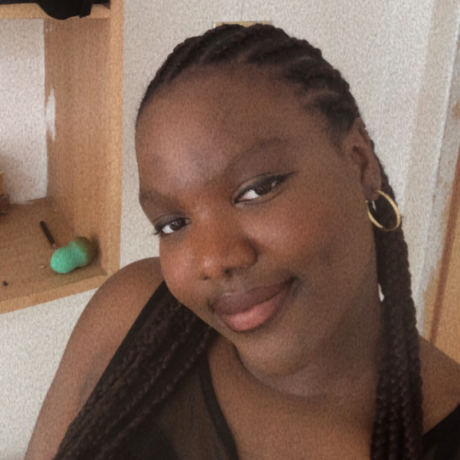

ABOUT ME
I am Ifunanya Ezeani, I am 20 years old, and also the second child and first daughter of my family. I am an identical twin, I am chubby, 5'11 in height and also dark in complexion.
I am a Nigerian, from Anambra state. The language I speak is Igbo, while English is my first Language. I grew up in a state called PortHrcourt for my first 13 years. Nigeria is a really beautiful country, also one of the richest countries in Africa. we have diffrent lovely cuisines, my favourite at the moment is a dish called "Beans and Plantain". The combination is just heavenly, and its also very rich in protein. We have other dishes like; Jollof rice, Abacha, eba and varieties of soup, and so on.
I love animals, dogs especially, although I don’t have any pets of my own. I love swimming, sleeping, cooking and watching movies, horror precisely. I also love to try out different meals and recipes, I love music, Melancholy specifically. My favorite artiste at the moment is Adele.
I currently don’t specialize in any fields right now. I’m still open to learning more skills and specialize in a field soon enough. I enjoy web designing and programming. I’m more of a front end developer, not really familiar with Back end developing.
I am an IT(information technology) student who began studying in spring 2021. I am currently in my 3rd year second semester. I’d say I’m a hardworking, resilient and smart student, I’m a great team member and possibly a leader too.